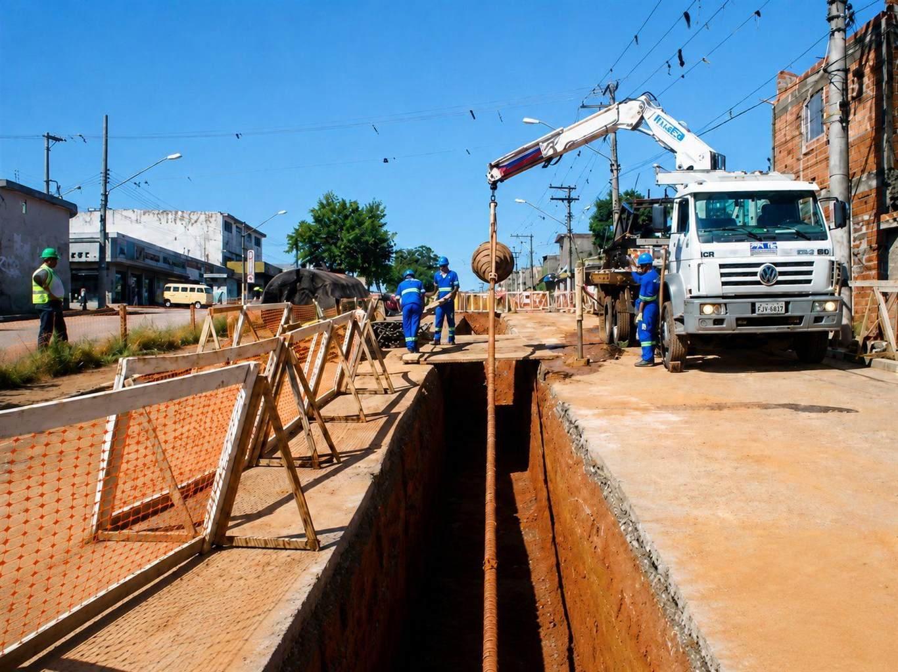
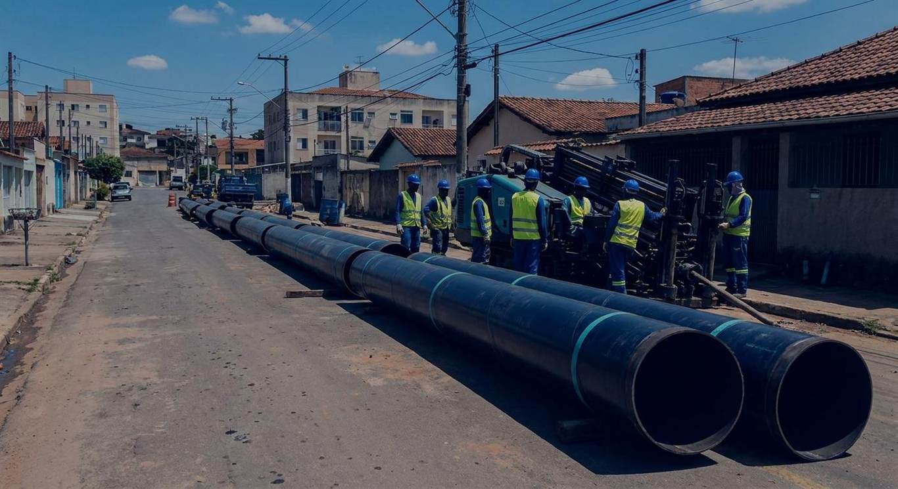
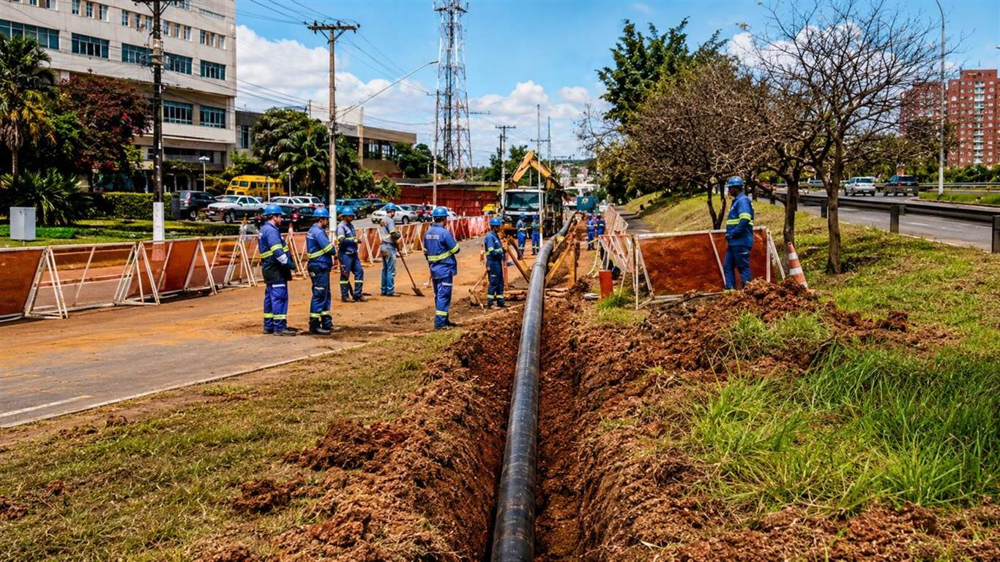
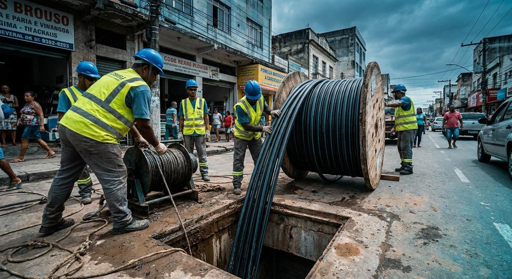
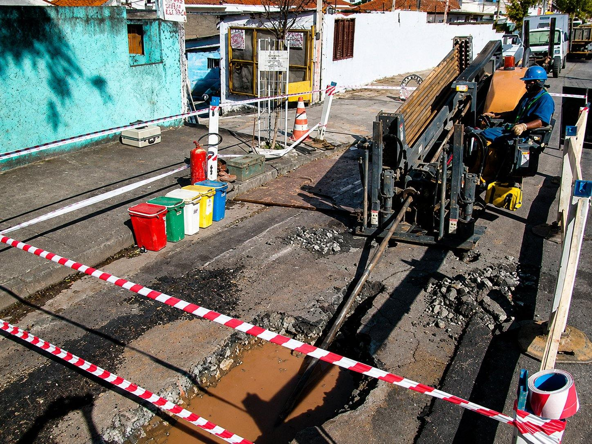
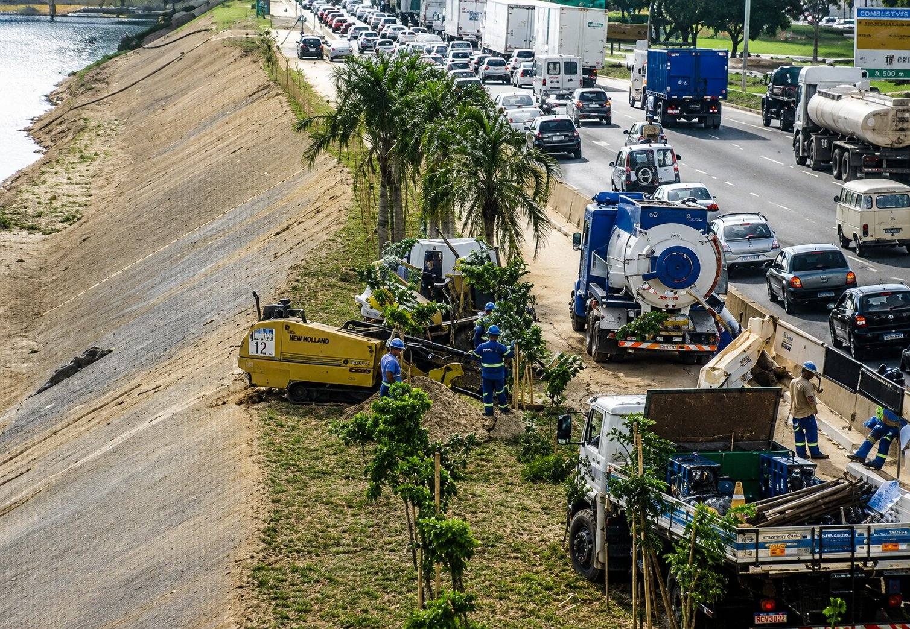
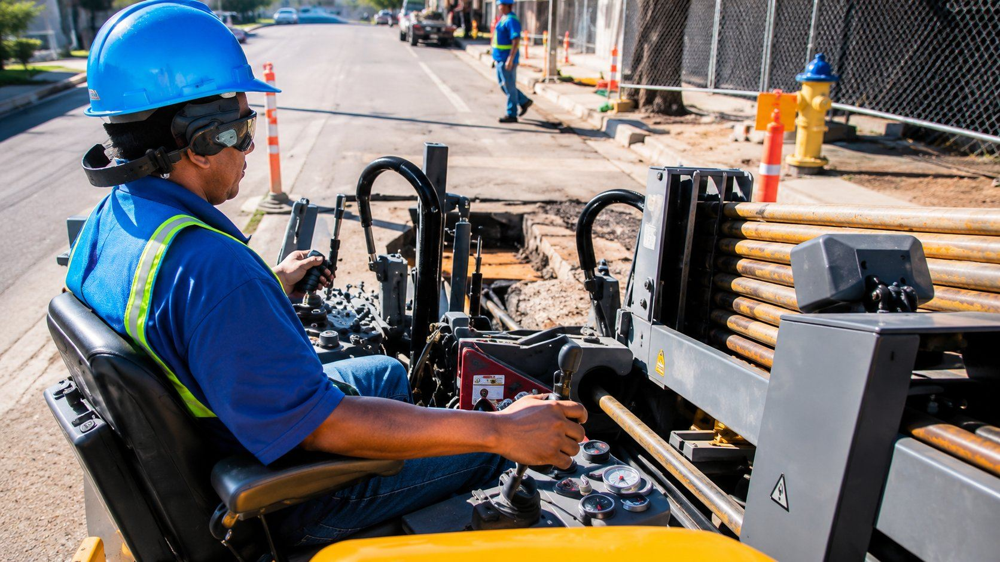
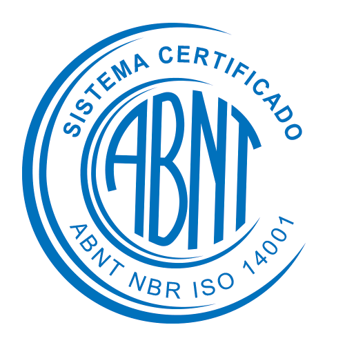
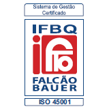

01
Redes de Energia Elétrica
Travessias e redes de distribuição subterrânea para concessionárias de energia, com controle de traçado e desvio de interferências.
Solicitar orçamentoA sua rede passa sob ruas, rios e rodovias sem interditar a via nem quebrar o pavimento — perfuração direcional (MND) de alta precisão, em travessias de mais de 1 km.
+1.000 km instaladosISO 9001·14001·45001Membro ABRATT
Antes de furar, mapeamos as interferências do subsolo (redes existentes) e o tipo de solo e elaboramos o plano do furo — o traçado exato que a perfuração vai seguir.
A sonda guiada por sistema de rastreamento executa o furo seguindo o traçado, controlando profundidade, inclinação e direção em tempo real — desviando das redes existentes.
O furo-piloto é alargado ao diâmetro de projeto numa ou mais passadas, preparando o túnel para receber a tubulação com folga e segurança.
O duto — em PEAD ou aço — é tracionado pelo túnel e instalado de uma só vez, da entrada à saída. A superfície permanece intacta.

Travessias e redes de distribuição subterrânea para concessionárias de energia, com controle de traçado e desvio de interferências.
Solicitar orçamento
Instalação de dutos de gás e derivados sob obstáculos críticos, com controle de traçado.
Solicitar orçamento
Água e esgoto por método não destrutivo, ideal para travessias profundas em centros urbanos.
Solicitar orçamento
Dutos e bancos de dutos para fibra óptica, sem interferir na superfície e no trânsito.
Solicitar orçamento
Travessias sob avenidas, ferrovias e rios para projetos de infraestrutura de grande porte.
Solicitar orçamento
Instalação contínua sob via de tráfego intenso pelo método não destrutivo — a rede passa por baixo enquanto a cidade segue funcionando na superfície.
Frota própria de perfuratrizes direcionais — da pequena travessia de fibra à instalação de dutos de grande diâmetro e longa distância. Cada equipamento é dimensionado pela força de tração (pullback) e pelo diâmetro do duto a instalar.
Faixas de referência dos fabricantes (Vermeer · Ditch Witch · XCMG · American Augers). O diâmetro e a extensão executáveis em cada obra dependem do solo, do traçado e do produto.
Locação eletrônica do furo, controle de fluido (bentonita/polímeros) e leitura de profundidade em tempo real — para desviar de redes existentes e entregar a via intacta.

A DRC executa a construção de redes subterrâneas pelo Método Não Destrutivo, atendendo concessionárias e construtoras. Formada por profissionais ligados à perfuração direcional desde o início da técnica no Brasil, é associada à ABRATT — ligada à ISTT (Londres) — e segue normas nacionais e internacionais de qualidade, meio ambiente e segurança.


Sim. A perfuração direcional executa em areia, silte, argila e solos mistos; para trechos rochosos usamos cabeças e ferramentas específicas. O tipo de solo é levantado na visita técnica e define a máquina, o fluido e o traçado.
É exatamente para isso que existe o método não destrutivo. A travessia passa por baixo do obstáculo, sem interromper o tráfego na superfície — sob avenidas, rodovias, ferrovias, rios e áreas urbanas adensadas.
Não há interdição total. O trabalho se concentra nos poços de entrada e saída; a via e o comércio seguem funcionando enquanto a rede é instalada no subsolo.
Antes de furar, fazemos a locação e o mapeamento das interferências do subsolo. Durante a perfuração, a sonda de navegação informa profundidade, inclinação e posição em tempo real, permitindo desviar das redes existentes.
A frota instala dutos do furo-piloto (Ø a partir de ~64 mm) ao alargamento de grande diâmetro (Ø até 1.000 mm, com a Vermeer D80x100), em travessias que vão de poucas dezenas de metros a mais de 1 km nas máquinas de maior porte. Os valores exatos dependem do solo, do traçado e do produto — definidos no projeto de furo.
PEAD/HDPE (água, gás, fibra óptica e eletrodutos) em toda a faixa da frota, e tubo de aço carbono nas máquinas maiores. Trabalhamos com fluidos de perfuração (bentonita e polímeros) para lubrificar e estabilizar o furo.
Depende da extensão, do diâmetro e do solo, mas o método não destrutivo costuma ser bem mais rápido que a vala aberta: como não há demolição de pavimento, escavação ao longo de todo o traçado nem recomposição depois, a obra se concentra nos poços de entrada e saída e nas quatro etapas (locação, furo-piloto, alargamento e puxamento). O cronograma é definido na visita técnica.
Além do serviço de perfuração, o MND elimina custos que a vala aberta cobra à parte: recomposição de pavimento e calçada, gestão de tráfego e bota-fora de material. O orçamento é definido após a visita técnica, conforme o solo, a extensão, o diâmetro e o produto. Envie os dados da sua obra que retornamos com uma estimativa — sem compromisso.
Sim. Atuamos com responsabilidade técnica e seguimos as normas do setor, com certificações ISO 9001, 14001 e 45001 e associação à ABRATT (ligada à ISTT).